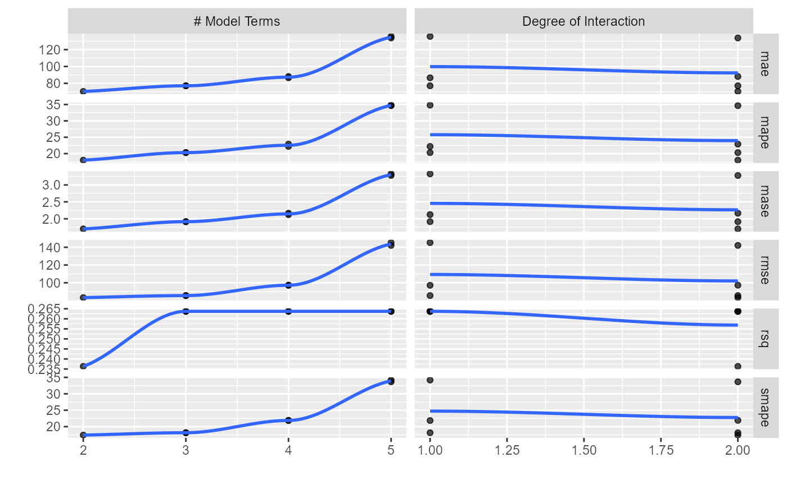

vignettes/auto-model-tune.Rmd
auto-model-tune.Rmd
library(healthyR.ts)
#>
#> == Welcome to healthyR.ts ===========================================================================
#> If you find this package useful, please leave a star:
#> https://github.com/spsanderson/healthyR.ts'
#>
#> If you encounter a bug or want to request an enhancement please file an issue at:
#> https://github.com/spsanderson/healthyR.ts/issues
#>
#> Thank you for using healthyR.ts
suppressPackageStartupMessages(library(dplyr))
suppressPackageStartupMessages(library(timetk))
suppressPackageStartupMessages(library(tidymodels))
suppressPackageStartupMessages(library(modeltime))
suppressPackageStartupMessages(library(parallel))This vignette is going to go through a workflow of automatically
tuning a timeseries model. The workflow is simple even though the
concepts can be seeming difficult. We are going to use the built in
dataset of AirPassengers that comes standard shipped with
R.
The function is called ts_model_auto_tune() and as it’s
simple name implies, it will tune a timeseries model. This function
although helpful does come with minor limitations. The
healthyR.ts package is designed to sit on top of and work
with modeltime
It is also important to note that the model itself should be infact
tuneable, like an xgboost model or a prophet
model. If the model is not tunable, or not meant to be tuned like a
standard lm model or an auto.arima model
(where the tuning is done for you) then the model will get rejected from
the function as there will be no model template returned.
The function is called like so (defaults are shown):
ts_model_auto_tune(
.modeltime_model_id,
.calibration_tbl,
.splits_obj,
.drop_training_na = TRUE,
.date_col,
.value_col,
.tscv_assess = "12 months",
.tscv_skip = "6 months",
.slice_limit = 6,
.facet_ncol = 2,
.grid_size = 30,
.num_cores = 1,
.best_metric = "rmse"
)This function will create a tuned model. It uses the
[healthyR.ts::ts_model_spec_tune_template()] under the hood
to get the generic template that is used in the grid search. The tuning
template will return a generic model template where tunable parameters
are set to [tune::tune()] using the tune package from tidymodels.
There is a single parameter to this function called
.parsnip_engine. It pulls the engine from the model and
returns the appropriate template to tune.
Here is an example:
ts_model_spec_tune_template("prophet")
#> PROPHET Regression Model Specification (regression)
#>
#> Main Arguments:
#> changepoint_num = tune::tune()
#> changepoint_range = tune::tune()
#> seasonality_yearly = auto
#> seasonality_weekly = auto
#> seasonality_daily = auto
#> prior_scale_changepoints = tune::tune()
#> prior_scale_seasonality = tune::tune()
#> prior_scale_holidays = tune::tune()
#>
#> Computational engine: prophetNow if you want to do a Prophet model with XGBoost errors in the model:
ts_model_spec_tune_template("prophet_xgboost")
#> PROPHET Regression Model Specification (regression)
#>
#> Main Arguments:
#> changepoint_num = tune::tune()
#> changepoint_range = tune::tune()
#> seasonality_yearly = FALSE
#> seasonality_weekly = FALSE
#> seasonality_daily = FALSE
#> prior_scale_changepoints = tune::tune()
#> prior_scale_seasonality = tune::tune()
#> prior_scale_holidays = tune::tune()
#> trees = tune::tune()
#> min_n = tune::tune()
#> tree_depth = tune::tune()
#> learn_rate = tune::tune()
#> loss_reduction = tune::tune()
#> stop_iter = tune::tune()
#>
#> Computational engine: prophet_xgboostAs you notice the seasonality features are set to FALSE so that the XGBoost model is used to predict them from the data.
This section will work through a simple example workflow using
several different healthyR.ts functions to prepare data.
Since I don’t want this vignette to have to run for a long time to
compile everytime I rebuild the package and the site, I have chosen to
use the MARS algorithm with the earth engine for a grid
size of only 5. The default is a grid size of 30 and a slice limit of 6,
which for this will be 3.
As previously mentioned, we will be using the default
AirPassengers dataset that comes shipped with
R.
data_ts <- AirPassengers
data_ts
#> Jan Feb Mar Apr May Jun Jul Aug Sep Oct Nov Dec
#> 1949 112 118 132 129 121 135 148 148 136 119 104 118
#> 1950 115 126 141 135 125 149 170 170 158 133 114 140
#> 1951 145 150 178 163 172 178 199 199 184 162 146 166
#> 1952 171 180 193 181 183 218 230 242 209 191 172 194
#> 1953 196 196 236 235 229 243 264 272 237 211 180 201
#> 1954 204 188 235 227 234 264 302 293 259 229 203 229
#> 1955 242 233 267 269 270 315 364 347 312 274 237 278
#> 1956 284 277 317 313 318 374 413 405 355 306 271 306
#> 1957 315 301 356 348 355 422 465 467 404 347 305 336
#> 1958 340 318 362 348 363 435 491 505 404 359 310 337
#> 1959 360 342 406 396 420 472 548 559 463 407 362 405
#> 1960 417 391 419 461 472 535 622 606 508 461 390 432Now lets transform the data from a a ts object into a
tibble using the [healthyR.ts::ts_to_tbl()] function.
data_tbl <- ts_to_tbl(data_ts) %>%
select(-index)
data_tbl
#> # A tibble: 144 x 2
#> date_col value
#> <date> <dbl>
#> 1 1949-01-01 112
#> 2 1949-02-01 118
#> 3 1949-03-01 132
#> 4 1949-04-01 129
#> 5 1949-05-01 121
#> 6 1949-06-01 135
#> 7 1949-07-01 148
#> 8 1949-08-01 148
#> 9 1949-09-01 136
#> 10 1949-10-01 119
#> # ... with 134 more rowsYou will notice that the ts_to_tbl() function gave us
the names of date_col and value. We can now
pass this tibble into the
[timetk::time_series_split()] function. This will make our
splits object.
splits <- time_series_split(
data_tbl
, date_col
, assess = 12
, skip = 3
, cumulative = TRUE
)
splits
#> <Analysis/Assess/Total>
#> <132/12/144>
head(training(splits))
#> # A tibble: 6 x 2
#> date_col value
#> <date> <dbl>
#> 1 1949-01-01 112
#> 2 1949-02-01 118
#> 3 1949-03-01 132
#> 4 1949-04-01 129
#> 5 1949-05-01 121
#> 6 1949-06-01 135
head(testing(splits))
#> # A tibble: 6 x 2
#> date_col value
#> <date> <dbl>
#> 1 1960-01-01 417
#> 2 1960-02-01 391
#> 3 1960-03-01 419
#> 4 1960-04-01 461
#> 5 1960-05-01 472
#> 6 1960-06-01 535We are now going to employ
[healthR.ts::ts_auto_recipe()] in order to generate four
distinct generalized recipes.
rec_objs <- ts_auto_recipe(
.data = data_tbl
, .date_col = date_col
, .pred_col = value
)
rec_objs[[4]]
#> Recipe
#>
#> Inputs:
#>
#> role #variables
#> outcome 1
#> predictor 1
#>
#> Operations:
#>
#> Timeseries signature features from ds
#> Centering and scaling for dplyr::contains("index.num"), dplyr::contains("...
#> Variables removed dplyr::matches("(iso$)|(xts$)|(hour)|(min)|(sec)|(am.pm)")
#> Dummy variables from recipes::all_nominal_predictors()
#> Fourier series features from ds
#> Yeo-Johnson transformation on value
#> Sparse, unbalanced variable filter on recipes::all_predictors()Now that we have our data and our recipe, we can make our automatic
workflowsets object. As mentioned at the top we are going to use the
MARS algorithm with the earth engine. This
function from healthyR.ts will take in a list of recipes
and a .model_type parameter, and create a workflowsets
tibble, where cross is set to TRUE
wfsets <- healthyR.ts::ts_wfs_mars(
.model_type = "earth"
, .recipe_list = rec_objs
)
wfsets
#> # A workflow set/tibble: 4 x 4
#> wflow_id info option result
#> <chr> <list> <list> <list>
#> 1 rec_base_mars <tibble [1 x 4]> <opts[0]> <list [0]>
#> 2 rec_date_mars <tibble [1 x 4]> <opts[0]> <list [0]>
#> 3 rec_date_fourier_mars <tibble [1 x 4]> <opts[0]> <list [0]>
#> 4 rec_date_fourier_nzv_mars <tibble [1 x 4]> <opts[0]> <list [0]>We see above that we have a total of four combinations of model spec and recipe. That is because we used a single engine to get a model specification and the automatic recipe function creates four distinct but related recipes.
First we will fit the data using the
[modeltime::modeltime_fit_workflowset()] function.
wf_fits <- wfsets %>%
modeltime_fit_workflowset(
data = training(splits)
, control = control_fit_workflowset(
allow_par = FALSE
, verbose = TRUE
)
)
#> i Fitting Model: 1
#> v Model Successfully Fitted: 1
#> i Fitting Model: 2
#> v Model Successfully Fitted: 2
#> i Fitting Model: 3
#> v Model Successfully Fitted: 3
#> i Fitting Model: 4
#> v Model Successfully Fitted: 4
#> Total time | 1.593 seconds
models_tbl <- wf_fits %>%
filter(.model != "NULL")
models_tbl
#> # Modeltime Table
#> # A tibble: 4 x 3
#> .model_id .model .model_desc
#> <int> <list> <chr>
#> 1 1 <workflow> REC_BASE_MARS
#> 2 2 <workflow> REC_DATE_MARS
#> 3 3 <workflow> REC_DATE_FOURIER_MARS
#> 4 4 <workflow> REC_DATE_FOURIER_NZV_MARSIt can happen from time to time that a model will be
NULL hence we drop any that might be.
Now it is time to calibrate the data with the testing set.
calibration_tbl <- models_tbl %>%
modeltime_calibrate(new_data = testing(splits))
calibration_tbl
#> # Modeltime Table
#> # A tibble: 4 x 5
#> .model_id .model .model_desc .type .calibration_data
#> <int> <list> <chr> <chr> <list>
#> 1 1 <workflow> REC_BASE_MARS Test <tibble [12 x 4]>
#> 2 2 <workflow> REC_DATE_MARS Test <tibble [12 x 4]>
#> 3 3 <workflow> REC_DATE_FOURIER_MARS Test <tibble [12 x 4]>
#> 4 4 <workflow> REC_DATE_FOURIER_NZV_MARS Test <tibble [12 x 4]>Now that we have gone through getting our data, making the models, fitting the models and calibrating them, we can choose one to put through the automatic tuner.
We will use the first model.
output <- healthyR.ts::ts_model_auto_tune(
.modeltime_model_id = 1,
.calibration_tbl = calibration_tbl,
.splits_obj = splits,
.drop_training_na = TRUE,
.date_col = date_col,
.value_col = value,
.tscv_assess = "12 months",
.tscv_skip = "3 months",
.num_cores = 1
)
#> i Slice1: preprocessor 1/1
#> v Slice1: preprocessor 1/1
#> i Slice1: preprocessor 1/1, model 1/2
#> v Slice1: preprocessor 1/1, model 1/2
#> i Slice1: preprocessor 1/1, model 1/2 (predictions)
#> i Slice1: preprocessor 1/1, model 2/2
#> v Slice1: preprocessor 1/1, model 2/2
#> i Slice1: preprocessor 1/1, model 2/2 (predictions)
#> i Slice2: preprocessor 1/1
#> v Slice2: preprocessor 1/1
#> i Slice2: preprocessor 1/1, model 1/2
#> v Slice2: preprocessor 1/1, model 1/2
#> i Slice2: preprocessor 1/1, model 1/2 (predictions)
#> i Slice2: preprocessor 1/1, model 2/2
#> v Slice2: preprocessor 1/1, model 2/2
#> i Slice2: preprocessor 1/1, model 2/2 (predictions)
#> i Slice3: preprocessor 1/1
#> v Slice3: preprocessor 1/1
#> i Slice3: preprocessor 1/1, model 1/2
#> v Slice3: preprocessor 1/1, model 1/2
#> i Slice3: preprocessor 1/1, model 1/2 (predictions)
#> i Slice3: preprocessor 1/1, model 2/2
#> v Slice3: preprocessor 1/1, model 2/2
#> i Slice3: preprocessor 1/1, model 2/2 (predictions)
#> i Slice4: preprocessor 1/1
#> v Slice4: preprocessor 1/1
#> i Slice4: preprocessor 1/1, model 1/2
#> v Slice4: preprocessor 1/1, model 1/2
#> i Slice4: preprocessor 1/1, model 1/2 (predictions)
#> i Slice4: preprocessor 1/1, model 2/2
#> v Slice4: preprocessor 1/1, model 2/2
#> i Slice4: preprocessor 1/1, model 2/2 (predictions)
#> i Slice5: preprocessor 1/1
#> v Slice5: preprocessor 1/1
#> i Slice5: preprocessor 1/1, model 1/2
#> v Slice5: preprocessor 1/1, model 1/2
#> i Slice5: preprocessor 1/1, model 1/2 (predictions)
#> i Slice5: preprocessor 1/1, model 2/2
#> v Slice5: preprocessor 1/1, model 2/2
#> i Slice5: preprocessor 1/1, model 2/2 (predictions)
#> ! Slice5: internal: A correlation computation is required, but `estimate` is const...
#> v Slice5: internal
#> i Slice6: preprocessor 1/1
#> v Slice6: preprocessor 1/1
#> i Slice6: preprocessor 1/1, model 1/2
#> v Slice6: preprocessor 1/1, model 1/2
#> i Slice6: preprocessor 1/1, model 1/2 (predictions)
#> i Slice6: preprocessor 1/1, model 2/2
#> v Slice6: preprocessor 1/1, model 2/2
#> i Slice6: preprocessor 1/1, model 2/2 (predictions)
#> ! Slice6: internal: A correlation computation is required, but `estimate` is const...
#> v Slice6: internalNow lets explore the output of the function.
The function outputs a list object, part of that output is data. Lets take a look at each piece of the data.
The data section has the following items: - calibration_tbl This is the calibration data passed into the function. - calibration_tuned_tbl This is a calibration tibble that has used the tuned workflow. - tscv_data_tbl This is the tibble of the time series cross validation. - tuned_results This is a tuning results tibble with all slices from the time series cross validation. - best_tuned_results_tbl This is a tibble of the parameters for the best test set with the chosen metric. - tscv_obj This is the actual time series cross validation object returned from timetk::time_series_cv()
output$data$calibration_tbl
#> # Modeltime Table
#> # A tibble: 4 x 5
#> .model_id .model .model_desc .type .calibration_data
#> <int> <list> <chr> <chr> <list>
#> 1 1 <workflow> REC_BASE_MARS Test <tibble [12 x 4]>
#> 2 2 <workflow> REC_DATE_MARS Test <tibble [12 x 4]>
#> 3 3 <workflow> REC_DATE_FOURIER_MARS Test <tibble [12 x 4]>
#> 4 4 <workflow> REC_DATE_FOURIER_NZV_MARS Test <tibble [12 x 4]>
output$data$calibration_tuned_tbl
#> # Modeltime Table
#> # A tibble: 1 x 5
#> .model_id .model .model_desc .type .calibration_data
#> <int> <list> <chr> <chr> <list>
#> 1 1 <workflow> EARTH Test <tibble [12 x 4]>
output$data$tscv_data_tbl
#> # A tibble: 747 x 4
#> .id .key date_col value
#> <chr> <fct> <date> <dbl>
#> 1 Slice1 training 1949-01-01 112
#> 2 Slice1 training 1949-02-01 118
#> 3 Slice1 training 1949-03-01 132
#> 4 Slice1 training 1949-04-01 129
#> 5 Slice1 training 1949-05-01 121
#> 6 Slice1 training 1949-06-01 135
#> 7 Slice1 training 1949-07-01 148
#> 8 Slice1 training 1949-08-01 148
#> 9 Slice1 training 1949-09-01 136
#> 10 Slice1 training 1949-10-01 119
#> # ... with 737 more rows
output$data$tuned_results
#> # Tuning results
#> # NA
#> # A tibble: 6 x 5
#> splits id .metrics .notes .predictions
#> <list> <chr> <list> <list> <list>
#> 1 <split [120/12]> Slice1 <tibble [48 x 6]> <tibble [0 x 3]> <tibble [96 x 6]>
#> 2 <split [117/12]> Slice2 <tibble [48 x 6]> <tibble [0 x 3]> <tibble [96 x 6]>
#> 3 <split [114/12]> Slice3 <tibble [48 x 6]> <tibble [0 x 3]> <tibble [96 x 6]>
#> 4 <split [111/12]> Slice4 <tibble [48 x 6]> <tibble [0 x 3]> <tibble [96 x 6]>
#> 5 <split [108/12]> Slice5 <tibble [48 x 6]> <tibble [1 x 3]> <tibble [96 x 6]>
#> 6 <split [105/12]> Slice6 <tibble [48 x 6]> <tibble [1 x 3]> <tibble [96 x 6]>
#>
#> There were issues with some computations:
#>
#> - Warning(s) x2: A correlation computation is required, but `estimate` is constant...
#>
#> Use `collect_notes(object)` for more information.
output$data$best_tuned_results
#> # A tibble: 1 x 8
#> num_terms prod_degree .metric .estimator mean n std_err .config
#> <int> <int> <chr> <chr> <dbl> <int> <dbl> <chr>
#> 1 2 1 rmse standard 83.3 6 4.54 Preprocessor1_Mo~
output$data$tscv_obj
#> # Time Series Cross Validation Plan
#> # A tibble: 6 x 2
#> splits id
#> <list> <chr>
#> 1 <split [120/12]> Slice1
#> 2 <split [117/12]> Slice2
#> 3 <split [114/12]> Slice3
#> 4 <split [111/12]> Slice4
#> 5 <split [108/12]> Slice5
#> 6 <split [105/12]> Slice6The model_info section has the following items: - model_spec This is the original modeltime/parsnip model specification. - model_spec_engine This is the engine used for the model specification. - model_spec_tuner This is the tuning model template returned from ts_model_spec_tune_template() - plucked_model This is the model that we have plucked from the calibration tibble for tuning. - wflw_tune_spec This is a new workflow with the model_spec_tuner attached. - grid_spec This is the grid search specification for the tuning process. - tuned_tscv_wflw_spec This is the final tuned model where the workflow and model have been finalized. This would be the model that you would want to pull out if you are going to work with it further.
output$model_info$model_spec
#> MARS Model Specification (regression)
#>
#> Main Arguments:
#> num_terms = num_terms
#> prod_degree = prod_degree
#> prune_method = prune_method
#>
#> Computational engine: earth
output$model_info$model_spec_engine
#> [1] "earth"
output$model_info$model_spec_tuner
#> MARS Model Specification (unknown)
#>
#> Main Arguments:
#> num_terms = tune::tune()
#> prod_degree = tune::tune()
#>
#> Computational engine: earth
output$model_info$plucked_model
#> == Workflow [trained] ==========================================================
#> Preprocessor: Recipe
#> Model: mars()
#>
#> -- Preprocessor ----------------------------------------------------------------
#> 0 Recipe Steps
#>
#> -- Model -----------------------------------------------------------------------
#> Selected 3 of 3 terms, and 1 of 1 predictors (nprune=200)
#> Termination condition: RSq changed by less than 0.001 at 3 terms
#> Importance: date_col
#> Number of terms at each degree of interaction: 1 2 (additive model)
#> GCV 1785.677 RSS 218190.8 GRSq 0.8441253 RSq 0.853499
output$model_info$wflw_tune_spec
#> == Workflow ====================================================================
#> Preprocessor: Recipe
#> Model: mars()
#>
#> -- Preprocessor ----------------------------------------------------------------
#> 0 Recipe Steps
#>
#> -- Model -----------------------------------------------------------------------
#> MARS Model Specification (unknown)
#>
#> Main Arguments:
#> num_terms = tune::tune()
#> prod_degree = tune::tune()
#>
#> Computational engine: earth
output$model_info$grid_spec
#> # A tibble: 8 x 2
#> num_terms prod_degree
#> <int> <int>
#> 1 3 1
#> 2 4 1
#> 3 4 2
#> 4 5 1
#> 5 3 2
#> 6 5 2
#> 7 2 2
#> 8 2 1
output$model_info$tuned_tscv_wflw_spec
#> == Workflow [trained] ==========================================================
#> Preprocessor: Recipe
#> Model: mars()
#>
#> -- Preprocessor ----------------------------------------------------------------
#> 0 Recipe Steps
#>
#> -- Model -----------------------------------------------------------------------
#> Selected 2 of 3 terms, and 1 of 1 predictors (nprune=2)
#> Termination condition: RSq changed by less than 0.001 at 3 terms
#> Importance: date_col
#> Number of terms at each degree of interaction: 1 1 (additive model)
#> GCV 2666.395 RSS 336147.5 GRSq 0.767246 RSq 0.7742987The plots section has the following items: - tune_results_plt This is a static ggplot of the grid search. - tscv_pl This is the time series cross validation plan plot.
output$plots$tune_results_plt
output$plots$tscv_pltThat is it, this simple workflow has shown you how to make a model and use the automatic tuner to get a tuned version of that model.